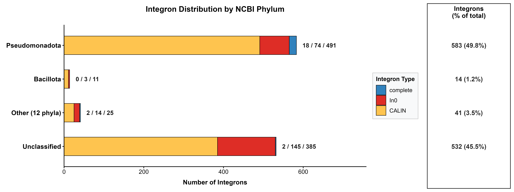

A reproducible pipeline that links every integron in a metagenome to the phylum, genus and species of the contig that carries it, and tests which phyla carry more integrons than their abundance predicts.

A typical metagenomic AMR study runs several analyses side by side. Each answers its own question, and the results are reported separately.
Integrons capture and spread gene cassettes, many of them antibiotic resistance genes, through horizontal gene transfer. A count of integrons does not say where resistance lives.
Néron et al. (2022) mapped integrons across phyla using complete genomes, where the host is known. In metagenomes the host is unknown, and no ready workflow made this link. Assigning each sample's dominant taxon to all its integrons is a common shortcut; in our data it supported a phylum pattern that contig-level taxonomy did not.
Every step is skipped automatically if it has already finished, so the pipeline is safe to re-run.
IntegronFinder 2 runs on every sample in parallel: complete, In0 and CALIN elements, attC sites, cassette proteins.
Only integron-carrying contigs are extracted and classified in a single Kraken2 run.
Lineage is parsed from the Kraken2 report: phylum, genus and species for every integron.
TSV + Excel per integron, sample, phylum and genus; publication-ready R figures.
-aKraken2 on all contigs measures each phylum's share of DNA; an exact binomial test (BH-corrected) shows which phyla carry more or fewer integrons than expected.
Phylum distribution (with "samples with integrons"), enrichment forest plot, 5-panel overview and a summary infographic.
Sample IDs can be anonymised in figures; data and results are kept out of the repository by default.
Requires conda and a Kraken2 database (Standard-16, ~11 GB, works well).
| Option | Meaning | Default |
|---|---|---|
| -k DIR | Kraken2 database | required |
| -e ENV | conda env containing kraken2 | active env |
| -a | also run the integron–phylum enrichment analysis | off |
| -o DIR | output folder | Integron_Phylum_results |
| -r DIR | reuse existing IntegronFinder results | – |
| -c / -j N | CPUs per run / samples in parallel | 8 / 4 |
Néron B., Littner E., Haudiquet M., Perrin A., Cury J., Rocha E.P.C. (2022). IntegronFinder 2.0: identification and analysis of integrons across Bacteria, with a focus on antibiotic resistance in Klebsiella. Microorganisms 10(4):700. doi:10.3390/microorganisms10040700
Wood D.E., Lu J., Langmead B. (2019). Improved metagenomic analysis with Kraken 2. Genome Biology 20:257. doi:10.1186/s13059-019-1891-0